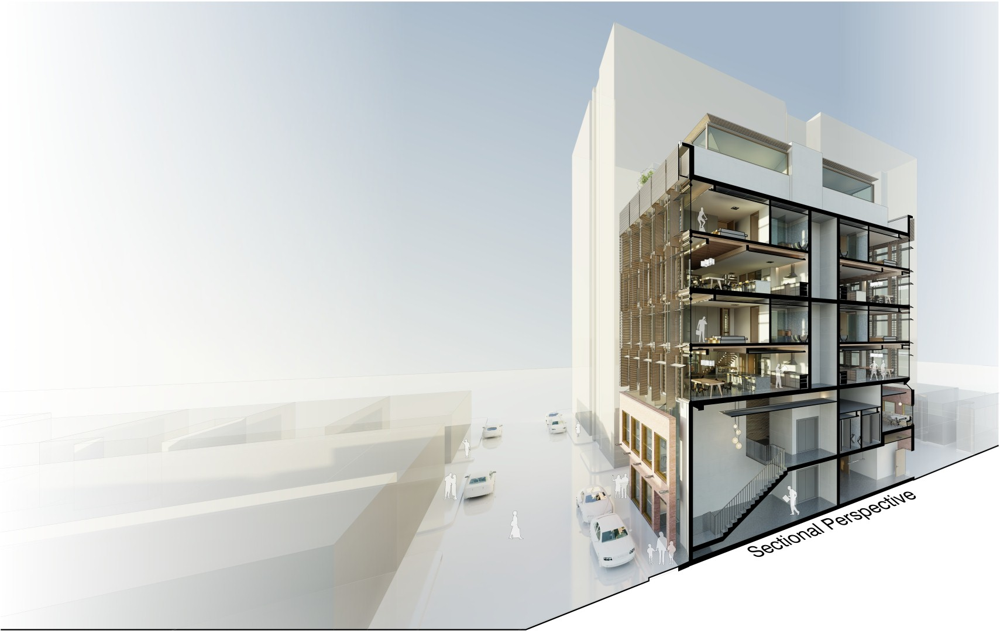
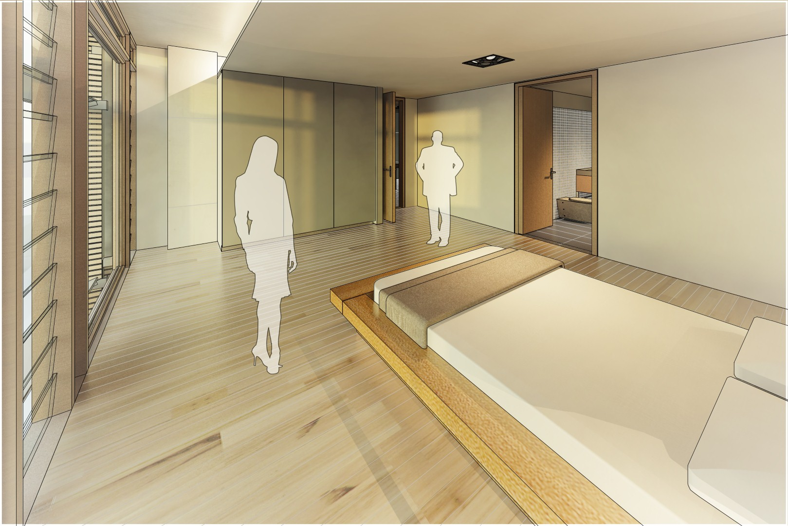
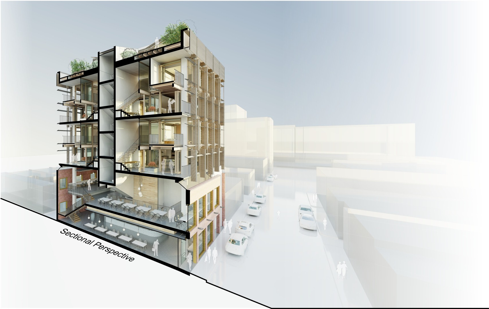

Boral • Adaptive Reuse • Design Competition
Australia
Briefed as a competition to showcase the strengths of the Australian architectural products manufacturer Boral, the design challenge was to convert an existing two storey brick warehouse located on the periphery of an undisclosed major urban centre into a residential or mixed use development. Contextual information was deliberately kept to a minimum. Conceptually the proposed conversion took the form of four loft style residences suspended over a retail conversion of the existing brick building.
Conceptually four loft style apartments are provided, each accommodating two bedrooms. Economically, the premise is to appeal to young professionals, who would appreciate generous spaces for entertaining while being unencumbered by large families and would benefit from living in close proximity to a Central Business District. Private car parking has been deliberately excluded from the concept as the assumption has been made that occupants would use public transit, bicycle, or walk to commute.

The remainder of the existing masonry building is refurbished and re-purposed as a retail or cafe tenancy as well as serving as residence lobby and exit corridor. Concrete walls and columns provide the structural means of creating large open volumes and providing adequate separation between building uses.
Above the Cafe, four lofts are encapsulated within a concrete shell. The structural framing of the four lofts above begins at level RL 8.4m which allows for a continuous perimeter skylight to frame the top edge of the masonry building, providing the appearance of a physical separation between additional and existing facades.




Project Info
- Project Name: Two x Four Lofts | Boral Design Competition 2011/2012
- Year Completed: 2012
- Location: Australia
- Firm: Erik Sziraki Architect
- Position: Designer